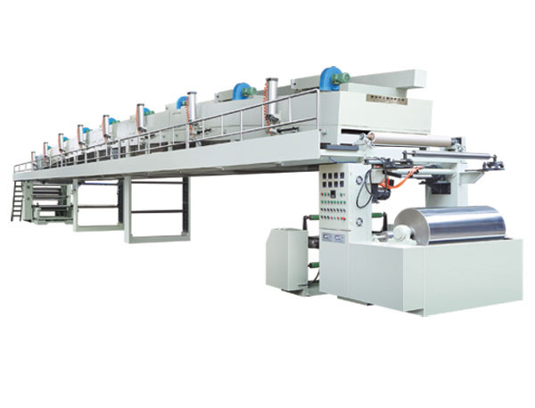

Optical Film Coating Explained: The Technology Behind LCD, OLED and Flexible Displays

Summary
Modern smartphones, televisions, tablets, laptops, automotive displays, and wearable devices all rely on advanced optical films to achieve superior brightness, color accuracy, contrast, and viewing angles.
These optical films are manufactured through highly precise coating processes that apply functional layers onto flexible substrates with micron-level accuracy. From polarizer films and brightness enhancement films to anti-reflection (AR) coatings and OLED functional layers, coating technology plays a fundamental role in display manufacturing.
This article explores how optical film coating technology powers LCD, OLED, Mini-LED, Micro-LED, and next-generation flexible display production.
Technology
- Modern optical film coating lines integrate advanced manufacturing technologies:
- Slot Die Coating Technology
- Micro Gravure Coating Technology
- Roll-to-Roll (R2R) Continuous Production
- Precision Tension Control System
- Multi-Layer Optical Coating Process
- UV Curing Technology
- Cleanroom Manufacturing Environment
- CCD Vision Inspection System
- Thickness Measurement & Monitoring System
- Web Guiding System
- Static Elimination System
- Automated Defect Detection
- High-Precision Rewinding System
- MES Manufacturing Integration System
Challenge
Optical film manufacturers face increasingly demanding technical requirements.
1. Ultra-High Coating Precision
Optical films require micron-level thickness consistency.
2. Defect-Free Surface Quality
Even tiny defects can affect display performance.
3. High Optical Performance Requirements
Brightness, transparency, and color reproduction must meet strict specifications.
4. Flexible Display Manufacturing
Foldable devices require films with excellent flexibility and durability.
5. Large-Scale Production Demand
Consumer electronics require extremely high production volumes.
6. Multi-Layer Coating Complexity
Modern displays use multiple functional coating layers.
Solution
Advanced optical film coating systems solve these challenges through precision engineering and automation.
Key Solutions：
High-precision Slot Die coating
Multi-layer optical coating technology
Cleanroom production environments
Real-time thickness monitoring
Automated defect inspection
Continuous Roll-to-Roll manufacturing
Intelligent process control systems
These technologies ensure stable production and exceptional optical performance.
Workflow & Layout
Typical optical film manufacturing workflow:
Step 1
PET Film Unwinding
↓
Step 2
Surface Cleaning & Treatment
↓
Step 3
Optical Layer Coating
↓
Step 4
UV Curing / Drying
↓
Step 5
Thickness Inspection
↓
Step 6
Optical Performance Testing
↓
Step 7
Defect Inspection
↓
Step 8
Rewinding Process
↓
Step 9
Slitting & Conversion
↓
Step 10
Display Module Integration
Results & ROI
- Optical film manufacturers typically achieve:
- Product Quality Improvement
- +30% to +60%
- Defect Reduction
- 20% to 70%
- Production Efficiency
- +25% to +50%
- Material Waste Reduction
- 15% to 40%
- Labor Cost Reduction
- 20% to 50%
- ROI
- 2-4 Years
Equipment List
- Core optical film coating line equipment:
- Film Unwinding System
- Slot Die Coating Machine
- Micro Gravure Coating Unit
- UV Curing System
- Drying Oven System
- Web Guiding System
- Tension Control System
- CCD Inspection System
- Thickness Measurement System
- Static Removal System
- Cleanroom Air Filtration System
- Rewinding System
- PLC Control Cabinet
- MES Production Interface
Project Overview / Opening
Every modern display relies on multiple optical films working together to create a bright, clear, and visually accurate image.
Whether it is a smartphone screen, OLED television, tablet display, laptop monitor, automotive dashboard, or foldable device, coating technology enables the production of highly specialized films that improve brightness, reduce glare, control light transmission, and enhance user experience.
As display technology continues to evolve toward higher resolutions and flexible form factors, precision optical film coating has become one of the most critical manufacturing processes in the electronics industry.
Key Points
- Polarizer Film
- Controls light polarization for LCD displays.
- Brightness Enhancement Film (BEF)
- Improves display brightness while reducing power consumption.
- Diffusion Film
- Creates uniform light distribution across the screen.
- Anti-Reflection (AR) Film
- Reduces reflections and improves visibility.
- Anti-Glare (AG) Film
- Minimizes glare under bright lighting conditions.
- OLED Functional Layers
- Support color performance, efficiency, and flexibility.
- Flexible Display Films
- Enable foldable and rollable electronic devices.
- Optical Precision
- Micron-level coating consistency is essential.
Implementation / Workflow
Phase 1
Display Product Requirement Analysis
Phase 2
Optical Film Structure Design
Phase 3
Coating Process Selection
Phase 4
Equipment Configuration
Phase 5
Cleanroom Installation
Phase 6
Line Commissioning
Phase 7
Optical Performance Validation
Phase 8
Mass Production Launch
Customer Value / Results
Optical film manufacturers gain:
Improved Display Performance
Higher brightness and better visual quality.
Reduced Defect Rates
Automated inspection improves consistency.
Higher Production Efficiency
Continuous Roll-to-Roll manufacturing increases throughput.
Better Product Competitiveness
Supports premium display products.
Flexible Display Capability
Enables next-generation foldable devices.
Lower Manufacturing Costs
Automation reduces labor and material waste.
Conclusion / Next Step
Optical film coating technology is a critical foundation of modern display manufacturing.
From polarizer films and brightness enhancement films to AR coatings, AG coatings, and OLED functional layers, every display depends on precision coating processes to achieve optimal performance.
As LCD, OLED, Mini-LED, Micro-LED, and flexible display technologies continue to advance, manufacturers investing in high-precision optical film coating systems will gain a significant competitive advantage in the rapidly growing electronics industry.
Looking for an Optical Film Coating Solution?
Whether you are manufacturing display films, OLED materials, flexible electronics, or advanced optical coatings, our engineering team can provide customized coating machine solutions designed for high-performance display production lines.
SEO Title
Optical Film Coating Technology for LCD, OLED and Flexible Display Manufacturing
SEO Description
Learn how optical film coating technology enables the production of polarizer films, brightness enhancement films, diffusion films, AR coatings, AG coatings, and OLED display layers for modern electronic devices.
SEO Keywords
- optical film coating
- polarizer film production
- OLED film manufacturing
- display coating technology
- brightness enhancement film
- diffusion film coating
- AR coating film
- AG coating film
- LCD display manufacturing
- OLED display production
- flexible display coating
- smartphone screen manufacturing
- optical coating machine
- roll to roll coating
- display film production line
Related Blog
Start with Your Business Challenge
Tell us about your warehouse, factory, or production requirements. We'll help you explore practical automation solutions and relevant project references.